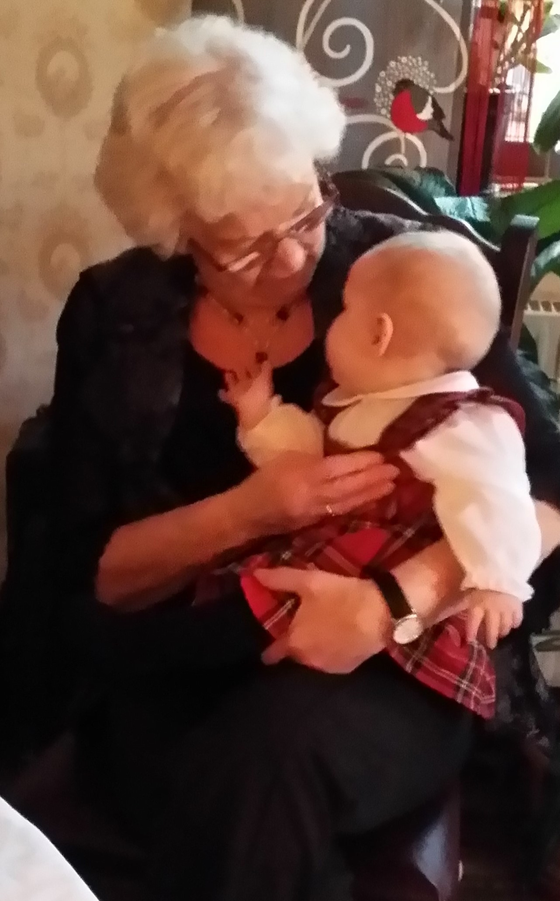

Hitta din icke-biologiska släkt!
Önskar ditt barn sig en extra-morfar? Vill du ha en extra-syster? Här kan du få kontakt med de personer som kan fylla upp det släkting-tomrum du saknar. Skapa en profil i menyn ovan, och leta bland redan befintliga profiler efter din extra-släkting.

Kontakta mig
Frågor eller synpunkter? Maila mig!